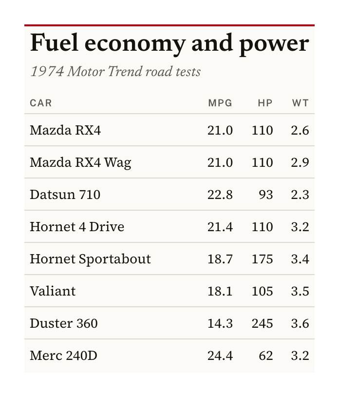
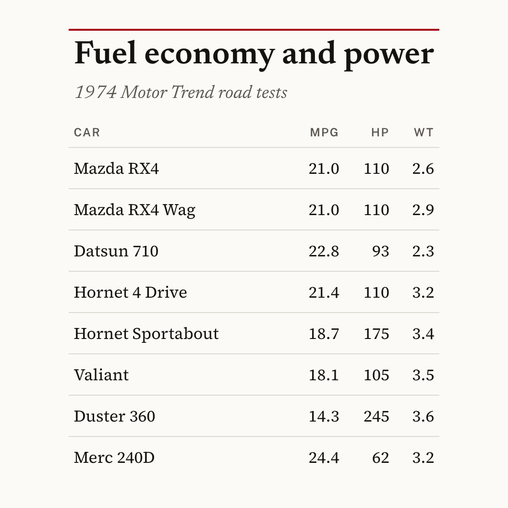
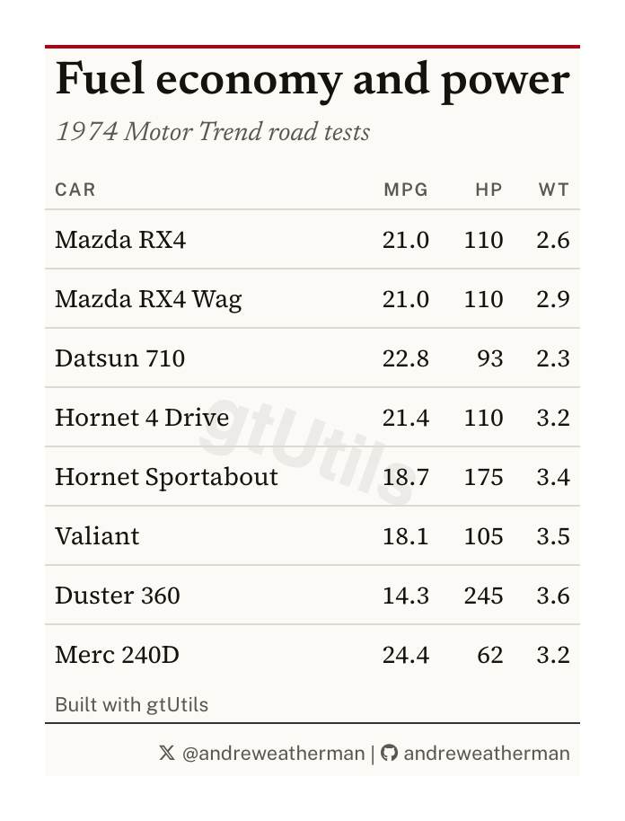
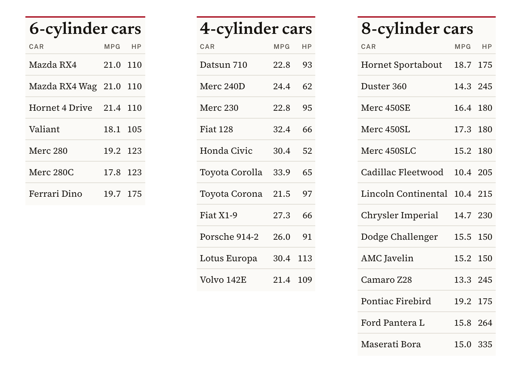

On this page
A table built for a browser and a table built for a feed are not the
same object. gt::gtsave() writes what the browser rendered,
margins included, at whatever size the page happened to be. Posting
wants a trimmed image, a predictable width across a set, and often a
specific shape.
This vignette covers the export side of the package:
gt_save_crop(), gt_social_crop(),
gt_save_batch(), the "social" density on every
theme, and the two attribution functions, gt_watermark()
and gt_social_tag().
Everything below runs on mtcars. The chunks that write
an image are not run when this site is built, because they drive a
headless Chrome; the picture under each one is what it writes.
cars <- head(mtcars, 8)
cars$car <- rownames(cars)
cars <- cars[c("car", "mpg", "hp", "wt")]
tbl <- gt(cars) %>%
gt_theme_broadsheet() %>%
tab_header("Fuel economy and power", "1974 Motor Trend road tests") %>%
fmt_number(c(mpg, wt), decimals = 1)Trimming and padding
gt_save_crop() renders the table, trims the whitespace
around it, then pads it back by a fixed amount so the image has an even
margin on all four sides.
tbl %>% gt_save_crop(file = "table.png")
whitespace sets that margin in pixels and
bg sets its color, which should match the theme’s
background. zoom controls the render scale, at
2 by default, so the output is retina-sized.
width is the one to know about for a series. Passing it
scales the finished image to an exact pixel width, holding the aspect
ratio. The table above comes out 696 by 814. With
width = 900 it becomes 900 by 1053.
tbl %>% gt_save_crop(file = "table.png", width = 900)Leave file unset and the image is returned rather than
written, which is useful when you want to keep working on it with
magick.
Sizing type for an image
Type sized for a browser reads small once the image is scaled into a
feed. Every theme in the package takes a density argument,
and "social" is the setting built for this (17px body,
roomier rows, and a larger title).
gt(cars) %>% gt_theme_broadsheet(density = "social")| car | mpg | hp | wt |
|---|---|---|---|
| Mazda RX4 | 21.0 | 110 | 2.620 |
| Mazda RX4 Wag | 21.0 | 110 | 2.875 |
| Datsun 710 | 22.8 | 93 | 2.320 |
| Hornet 4 Drive | 21.4 | 110 | 3.215 |
| Hornet Sportabout | 18.7 | 175 | 3.440 |
| Valiant | 18.1 | 105 | 3.460 |
| Duster 360 | 14.3 | 245 | 3.570 |
| Merc 240D | 24.4 | 62 | 3.190 |
A fixed canvas
Some destinations want a shape rather than a size.
gt_social_crop() centers the table on a canvas of a target
aspect ratio.
gt(cars) %>%
gt_theme_broadsheet(density = "social") %>%
gt_social_crop(aspect_ratio = "1:1", bg = "#FBFAF7", file = "square.png")
aspect_ratio reads "1:1",
"16:9", "4x5", or a bare number like
1.91.
The canvas always grows to fit. The same table comes out 834 by 834
at "1:1" and 1483 by 834 at "16:9", so the
height held and the width expanded. It works that way in both
directions, which means the table is never cropped to make the ratio.
gravity moves the table on the canvas if you do not want it
centered.
Attribution
gt_watermark() puts a faint wordmark behind the table
body, and gt_social_tag() puts handles and icons in the
source note.
tbl %>%
gt_watermark(
text = "sdvplotR", opacity = 0.06, size = "62%", angle = 20,
font = "Helvetica"
) %>%
gt_social_tag(c(x = "@andreweatherman", gh = "andreweatherman"),
caption = "Built with sdvplotR"
) %>%
gt_save_crop(file = "branded.png")
Two things about the watermark.
It is drawn as an SVG background image, because that is the only way
to sit behind the body without taking up a row. An SVG background cannot
load the page’s webfonts, so font has to name a face
installed on the machine doing the rendering. "Helvetica"
and "Arial" are safe. A Google font named there will
silently fall back.
It also sits behind the body cells, so it disappears under any cell
that has its own fill. On a striped theme, or after
gt_color_ranks(), you will only see it in the gaps. Themes
without fills, like gt_theme_broadsheet() or
gt_theme_swiss(), show it cleanly.
gt_social_tag() takes a named vector where the names
pick the icon. It knows the common aliases (x,
bsky, ig, gh, yt,
web, email among others) and falls back to any
Font Awesome icon name. stack = TRUE puts one account per
line for a narrow table.
One image per group
gt_save_batch() splits the data, builds a table for each
group with a function you supply, and writes one image per group.
bcars <- mtcars
bcars$car <- rownames(bcars)
bcars <- bcars[c("car", "cyl", "mpg", "hp")]
gt_save_batch(
bcars,
group = cyl,
file = "cyl-{group}.png",
dir = "out",
fn = function(df, g) {
gt(df[c("car", "mpg", "hp")]) %>%
gt_theme_broadsheet() %>%
tab_header(paste0(g, "-cylinder cars"))
}
)
file is a pattern rather than a path.
{group} is replaced by each group’s value, so this writes
out/cyl-4.png, out/cyl-6.png, and
out/cyl-8.png. The directory is created if it does not
exist.
fn receives that group’s rows and the group value, and
has to return a gt_tbl. Anything else raises an error
naming what came back instead.
match_width is on by default and is the reason to use
this over a loop. The three groups here hold 11, 7, and 14 cars, so the
tables render at different widths. Every image is padded out to the
widest of them, giving 524 pixels across all three with heights of 680,
944, and 1142.
Set match_width = FALSE to keep each image at its
natural width, and quiet = TRUE to suppress the per-group
progress messages.